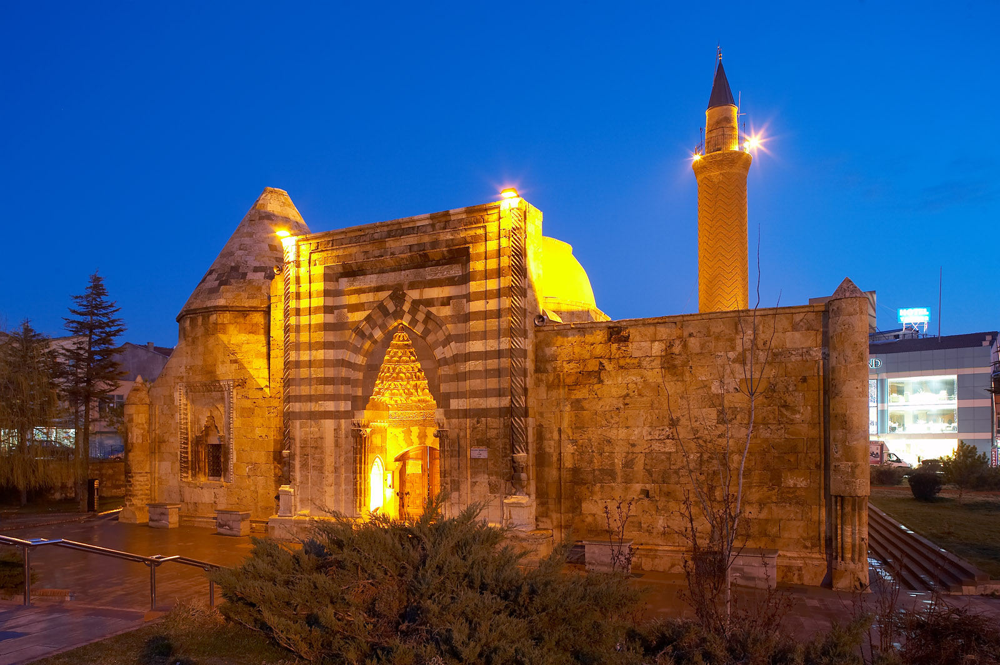
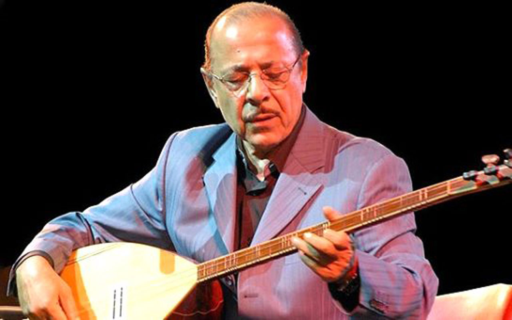

Kırşehir Hakkında Bilgiler
2019 yılı TÜİK verilerine göre toplam il nüfusu 242.938'dir.İlin yüzölçümü 6.570 kilometrekaredir.Kırşehir doğu ve güneydoğuda Nevşehir, güneyde Aksaray, kuzeybatıda Kırıkkale, kuzeydoğu ve doğuda Yozgat, batıda Ankara ile çevrilidir.Şehirdeki tek üniversite Ahi Evran Üniversitesi'dır. Üniversitede tıp fakültesi ile birlikte birçok fakülte ve yüksek okul bulunmaktadır.

Kırşehir ve Tarih
Kırşehir kent merkezinde bulunan medrese Selçuklu döneminde Kılıçaslan oğlu Keyhüsrev zamanında Kırşehir emiri Nurettin Cibril Bin Cacabey tarafından 1271-1272 yıllarında bir gözlem evi medrese olarak yaptırılmıştır.Eser sonradan camiye çevrilmiştir. Birkaç kez onarılmış olup minaresindeki mavi çiniler nedeniyle halk arasında “ cıncıklı” camii adı ile anılmaktadır. Medrese kesme taştan yapılmış olup kare planlıdır. İki eyvanlı kapalı avlulu medreseler gurubuna girmektedir. Döneminde astronomi yüksek okulu olarak hizmet vermiştir.

Halkın Geçim Kaynakları
Kırşehir'de, kışları soğuk ve kar yağışlı, yazları sıcak ve genellikle kurak geçen karasal iklim görülür.Bundan dolayı halkın çoğu tahıl tarımı ile uğraşır.Hayvancılık ta bir geçim kaynağı olsada tarım kadar büyük bir yüzde kaplamamaktadır.

Neşet Ertaş
Neşet ERTAŞ, 1938 yılında Kırşehir’ in Kırtıllar köyünde dünyaya geldi.İlkokul çağlarında önce keman, sonra da bağlama çalmasını öğrendi.Neşet ERTAŞ babası Muharrem ERTAŞ ile adeta Anadoludaki en olgun ve seviyesine erişen bu Türkmen/Abdal müzik birikiminin yeni bir yorumcusudur.Neşet ERTAŞ’ın sanatı; müziğin özünü ruhunu kavrayan birinin, hiçbir yapmacılığa tevessül etmeden, olduğu gibi kendini, kendi özünü ve hissettiklerini saza, söze dökmesidir. Bu sebeple de “ Bozkırın Tezenesi ” olarak bilinmektedir.25 Eylül 2012 tarihinde İzmir’de tedavi gördüğü hastanede ileri evrede prostat kanseri nedeniyle yaşamını yitirmiştir.